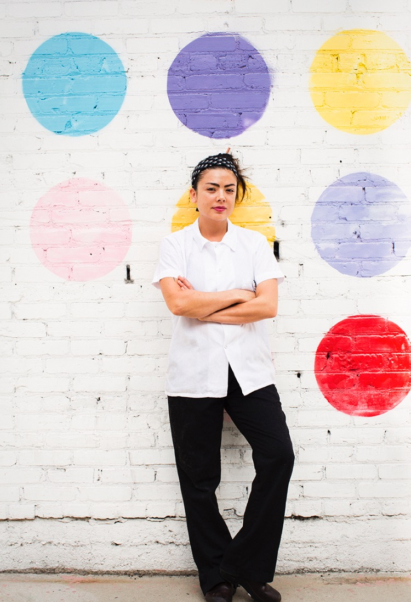

Monday - Friday 8am - 4:30pm
Saturday + Sunday 9am - 4:40pm
654 N Hoover St, Los Angeles, CA 90004
Philosophy + Food
Jewel is a plant-based restaurant--not specifically vegan, vegetariant, or gluten-free--althrough many of our offerings do fit the bill.
Our food is inspired by the bounty of produce in southern California and features luscious salads, colorful burgers, mind-blowing pizza, warming bowls of pasta, and dynamic grain bowls with lacto-fermented veggies and bright pickles. The menu is inclusive of organic free range effs to offer a healthy range of options.


Seasonal vegetables, sea vegetables, and fruits are the building blocks. Grains and legumes, superfoods, spices, nut butters, and cheeses are key players. Eggs can be added to your preference.
Refined sugars, processed ingredients, and products of industrial agriculture and never welcome.
Who We Are
Chef Jasmine Shimoda is classically trained, with over a decade of experience across kitchens in New York City. At Jewel, she channels her training and passion for excellence into a plant-forward, farmer-driven menu.
Sharky McGee is a native of the Phillippines, where she studied hospitality and restaurant management. She has enjoyed an exciting carrer as the manager of such iconic restaurants as Pastic and L'Apicio in NYC and Balthazar in Londor. Sharky joined Gjelina Venice in 2016, deeply drawn to their food philosophy and high standands.